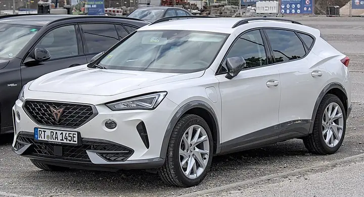
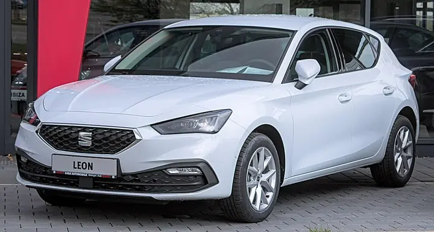
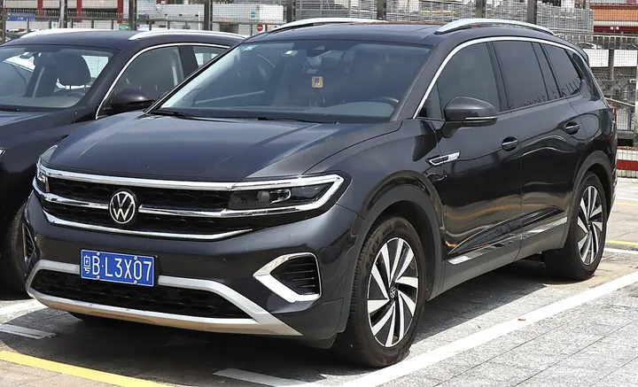
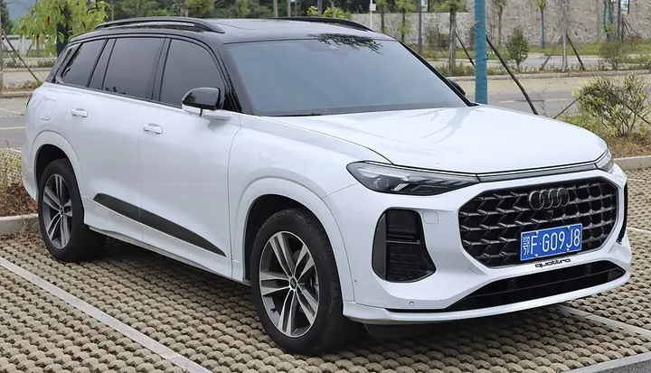
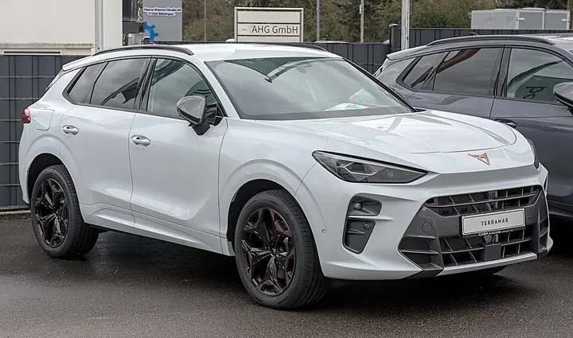
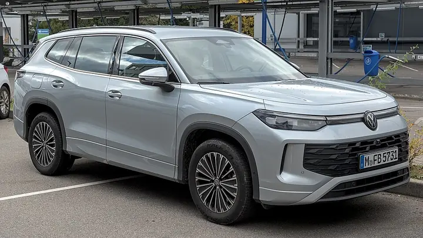
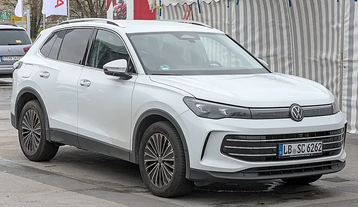
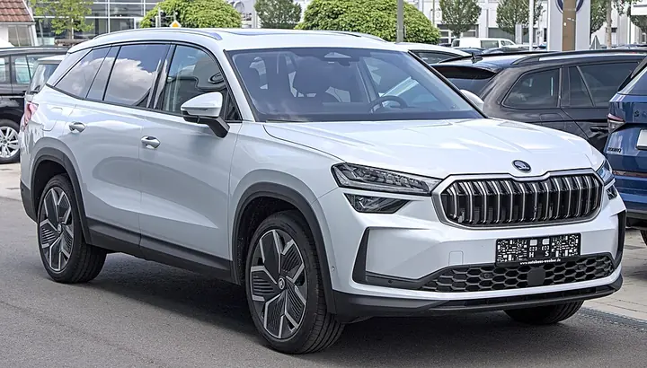

Platform
Volkswagen Group MQB Evo
21 generations of 21 models by Volkswagen, Škoda, Audi, Cupra and SEAT, 2019–present.
The cars
 Volkswagen Golf · Eighth generation (Mk8, CD1; 2019)
Volkswagen Golf · Eighth generation (Mk8, CD1; 2019) Volkswagen Golf Mk8
Volkswagen Golf Mk8 Škoda Octavia · Fourth generation (Typ NX; 2020)
Škoda Octavia · Fourth generation (Typ NX; 2020) Audi A3 · Fourth generation (Typ 8Y; 2020)
Audi A3 · Fourth generation (Typ 8Y; 2020)
Cupra Formentor
SEAT León · Fourth generation (KL1/KL8; 2020) Volkswagen Multivan (T7)
Volkswagen Multivan (T7)
Volkswagen Talagon
Audi Q6 Volkswagen Lamando · Second generation (2022)
Volkswagen Lamando · Second generation (2022) Volkswagen Tavendor
Volkswagen Tavendor Volkswagen Magotan · Fourth generation (B9; 2024)
Volkswagen Magotan · Fourth generation (B9; 2024) Volkswagen Passat · B9 (Typ 3J; 2023)
Volkswagen Passat · B9 (Typ 3J; 2023) Škoda Superb · Fourth generation (B9, Typ 3Y; 2023)
Škoda Superb · Fourth generation (B9, Typ 3Y; 2023)
Cupra Terramar
Volkswagen Tayron · Second generation (Typ DN; 2024)
Volkswagen Tiguan · Third generation (CT1; 2024)
Škoda Kodiaq · Second generation (2024) Audi Q3 · Third generation (Typ FJ; 2025)
Audi Q3 · Third generation (Typ FJ; 2025) Volkswagen Lavida · Fourth generation (Lavida Pro; 2025)
Volkswagen Lavida · Fourth generation (Lavida Pro; 2025) Volkswagen T-Roc · Second generation (2025)
Volkswagen T-Roc · Second generation (2025)